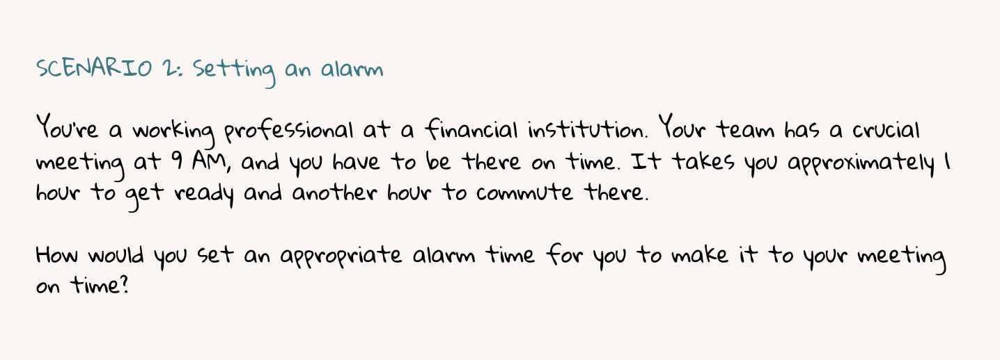

Timeline
2 months from Jan-Feb 2019
Role
UX Researcher
Team
Cher-Ann Chai
Mimi Cheung, Sharon Lam
Tools
Google Survey, Sheets
Methods
Interviews, Observations, Surveys, Pre/Post Questionnaires
Released in 2017, the Coulax Alarm clock helps users wake up
naturally by simulating sunrise. Sounds like a great way to wake up, but how easy is it to use?
As part of a usability assessment course for the Master of Information program at U of T, we were asked to choose a software/hardware of our choice to evaluate its ease of use. As a team, we decided to tackle hardware since it will be an exciting challenge to take on - especially
since the Coulax Alarm Clock had special features that a regular alarm wouldn't have (e.g. different colour light settings).
2 months from Jan-Feb 2019
UX Researcher
Cher-Ann Chai
Mimi Cheung, Sharon Lam
Google Survey, Sheets
Interviews, Observations, Surveys, Pre/Post Questionnaires
We started off by creating user profiles to figure out who is the target audience for this alarm clock. After discussing as a team, we narrowed down our user profile to students and working individuals, since they were more likely to have a need to wake up on time for classes or work.
We recruited 8 participants matching target audience. Since this is a course project, we were unable to provide any monetary incentives, but we did offer cookies at the end of each session!
To keep the scenarios as realistic as possible, we wrote scenarios that provided context to the tasks instead of specific instructions to interact with a feature. We also tried to keep the scenarios less ‘step-based’, in order not to implicitely guide the user on how it should be used.
Example Scenario

What data do we need to evaluate the usability of this alarm clock?
Keeping this question in mind, we decided to collect the following data:


Based on our research, we believe there is a gap between what is available for students and their expectations.
Students would like to be involved but are unable to find events efficiently. Even if they did find an event, they may not
get a positive experience if they feel awkward going alone.
With sticky notes in hand, we let our creativity flow and brainstormed lots of ideas based on users' needs and pain points established. For fun, we also came up with some ideas that were a bit more absurd, i.e. a sorting hat that finds events for you!
We
voted our ideas based on feasibility and impact, and mapped it on a prioritization grid to see which ideas scored the highest.
To keep our scope focused, we took ideas that scored the highest and narrowed it down to
3 feature-based goals for our design:
With the 3 goals in mind, we created low-fidelity mockups of our initial design, then conducted lean evaluation tests with a few representative users. We asked them to 'think-aloud' on what they thought about the features and layout of the design, to figure out whether we're on the right path with these designs, and to identify any fundamental usability issues before moving on to the next step.
We used the feedback from our lean evaluation testing to improve the designs for our medium fidelity mockups. We created the designs on Figma and developed a clickable prototype using InVision. Click here for our clickable prototype.
Example Workflow: Searching for event, confirming attendance and pairing up with an event buddy
.jpg)
In order to evaluate our designs and uncover further opportunities for improvement,
we designed 3 tasks based on the 3 goals established earlier, and conducted tests with a few representative users.
We also conducted post-test interviews to learn more about what they thought and experienced with the design.
After the tests, we compiled our users' feedback and drew key points to inform our next steps, as outlined below.
Since this is a course project, we realize our design has real-life limitations. We would need to conduct stakeholder interviews, e.g. developers, UofT event organizers, to better understand the feasibility of the app, particularly its technical feasibility. We would also need to increase and diversify the sample size of our participants to get a comprehensive understanding of our representative users.
Based on our usability test results, focusing on making changes to the home, event buddy information and confirmed attendance screen would be our next steps.